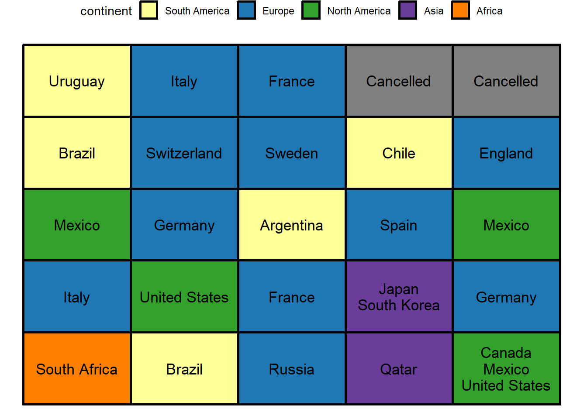
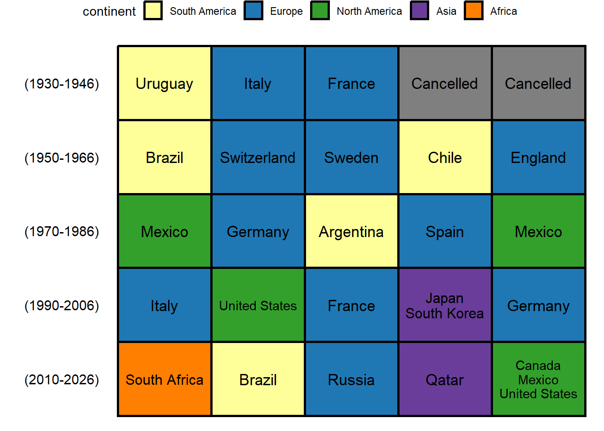

1.3 What is the timeline of hosting the world cup?
What was missing from the previous representation of the data is the time component. In this section we’ll explore a visualization method that would allow us to add this crucial aspect.
Let’s have a look on the data.
gt::gt(df_host1)| host_year | country_name | continent | country_code |
|---|---|---|---|
| 1930 | Uruguay | South America | UY |
| 1934 | Italy | Europe | IT |
| 1938 | France | Europe | FR |
| 1950 | Brazil | South America | BR |
| 1954 | Switzerland | Europe | CH |
| 1958 | Sweden | Europe | SE |
| 1962 | Chile | South America | CL |
| 1966 | England | Europe | NA |
| 1970 | Mexico | North America | MX |
| 1974 | Germany | Europe | DE |
| 1978 | Argentina | South America | AR |
| 1982 | Spain | Europe | ES |
| 1986 | Mexico | North America | MX |
| 1990 | Italy | Europe | IT |
| 1994 | United States | North America | US |
| 1998 | France | Europe | FR |
| 2002 | Japan, South Korea | Asia | JP, KR |
| 2006 | Germany | Europe | DE |
| 2010 | South Africa | Africa | ZA |
| 2014 | Brazil | South America | BR |
| 2018 | Russia | Europe | RU |
| 2022 | Qatar | Asia | QA |
| 2026 | Canada, Mexico, United States | North America | CA, MX, US |
We’ll start by preparing the hosting data for visualization by filling in the gap years where the world cup stopped due to WWII
#add missing years in which world cup was cancelled
df_tm <- df_host1 %>%
#add rows with missing years in host_year column
complete(host_year = full_seq(host_year, 4)) %>%
#fill the missing data in the other columns
mutate(across(where(is.character),
~ ifelse(is.na(.x), "Cancelled", .x)
)
)We’ll use a chronologically ordered tiles plot (AKA waffle plot) to visualize the timeline of hosting the world cup. Each tile would represent a world cup host. Thus, we need to create a 25-tiles plot (the number of 4-years intervals that represent hosted and cancelled world cup) and order hosts chronologically from left to right, and top to bottom.
#Define the position of each tile chronologically
df_tm <- df_tm %>%
arrange(host_year) %>%
mutate(x = rep(1:5, 5), #number of columns (left to right order)
y = rep(5:1, each = 5) #number of rows (top to bottom order)
)
gt::gt(df_tm)| host_year | country_name | continent | country_code | x | y |
|---|---|---|---|---|---|
| 1930 | Uruguay | South America | UY | 1 | 5 |
| 1934 | Italy | Europe | IT | 2 | 5 |
| 1938 | France | Europe | FR | 3 | 5 |
| 1942 | Cancelled | Cancelled | Cancelled | 4 | 5 |
| 1946 | Cancelled | Cancelled | Cancelled | 5 | 5 |
| 1950 | Brazil | South America | BR | 1 | 4 |
| 1954 | Switzerland | Europe | CH | 2 | 4 |
| 1958 | Sweden | Europe | SE | 3 | 4 |
| 1962 | Chile | South America | CL | 4 | 4 |
| 1966 | England | Europe | NA | 5 | 4 |
| 1970 | Mexico | North America | MX | 1 | 3 |
| 1974 | Germany | Europe | DE | 2 | 3 |
| 1978 | Argentina | South America | AR | 3 | 3 |
| 1982 | Spain | Europe | ES | 4 | 3 |
| 1986 | Mexico | North America | MX | 5 | 3 |
| 1990 | Italy | Europe | IT | 1 | 2 |
| 1994 | United States | North America | US | 2 | 2 |
| 1998 | France | Europe | FR | 3 | 2 |
| 2002 | Japan, South Korea | Asia | JP, KR | 4 | 2 |
| 2006 | Germany | Europe | DE | 5 | 2 |
| 2010 | South Africa | Africa | ZA | 1 | 1 |
| 2014 | Brazil | South America | BR | 2 | 1 |
| 2018 | Russia | Europe | RU | 3 | 1 |
| 2022 | Qatar | Asia | QA | 4 | 1 |
| 2026 | Canada, Mexico, United States | North America | CA, MX, US | 5 | 1 |
Let’s have a first look at the time line
df_tm %>%
ggplot(aes(x, y, fill = continent ))+
geom_tile(color = "black", size = 1)+
#add country names within each tile
geom_text(aes(label = country_name),
size = 4,
show.legend = FALSE)+
#fill by continent
scale_fill_manual(values = conti_cols)## Warning: Using `size` aesthetic for lines was deprecated in ggplot2 3.4.0.
## ℹ Please use `linewidth` instead.
Nice! As you can see hosts are ordered so that the first world cup is in the left-top corner and the 2026 cup is in the right-bottom corner.
One can easily notice that for years where the world cup was cohosted by more than one country, the text doesn’t fit within the tile. We’ll fix this issue in two steps. First, we can split cohosts in different lines so that they are stacked on top of each other in each tile.
#split cohosts into separate lines
df_tm <- df_tm %>%
mutate(#add a new line between cohosts
country_name = str_replace_all(country_name, ", ", "\n"),
#order countries by appearance in the timeline
continent = factor(continent, levels = unique(continent)))Second, we’ll use geom_fit_text instead of geom_text to confine the text to the area of each tile. Let’s have another look at the plot after modifying the text.
(plot <- df_tm %>%
ggplot()+
geom_tile(aes(x, y, fill = continent ),
color = "black", size = 1)+
#fit country names within each tile
ggfittext::geom_fit_text(aes(x, y, fill = continent,label = country_name), size = 13,show.legend = FALSE)+
#fill by continent
scale_fill_manual(values = conti_cols))
No doubt that countries’ names are more readable now! We can safely remove the plots axes since they don’t actually add anything and move the legend to the top.
(plot <- plot +
theme_nothing()+
theme(legend.position = "top"))
Despite the fact that tiles are ordered by year, what’s missing is the year of each cup. How can we add this to the plot? One way would be to indicate the range of years each to the left of each row.
df_range <- df_tm %>%
group_by(y) %>%
#range of years (first tile - last tile)
mutate(range = glue::glue("({min(host_year)}-{max(host_year)})")) %>%
ungroup() %>%
distinct(y, range)Let’s add the ranges to the plot and have yet another look
(plot <- plot+
#add the time interval of each row
geom_text(data = df_range,
aes(y = y, label = range),
x = -0.1,
size = 4)+
#expand the plotting area
scale_x_discrete(expand = expansion(add = c(1.3, 0.2)))
)
This worked well! We can now easily know the year of hosting of each world cup. Finally, let’s beautify the plot by adding borders and some text for context.
plot+
labs(title = "History of hosting FIFA world cup",
subtitle = "Host countries of world cups chronologically orderd and colored by continent",
caption = caption_cdc)+
coord_fixed(0.7)+
theme(title = element_text(size = 10),
panel.border = element_rect(linewidth = 2,
linetype = "solid",
color = "black",
fill = NA))
YES!! This is a condensed and clear representation of our data, which are two desirable features -when in balance- in data visualization!